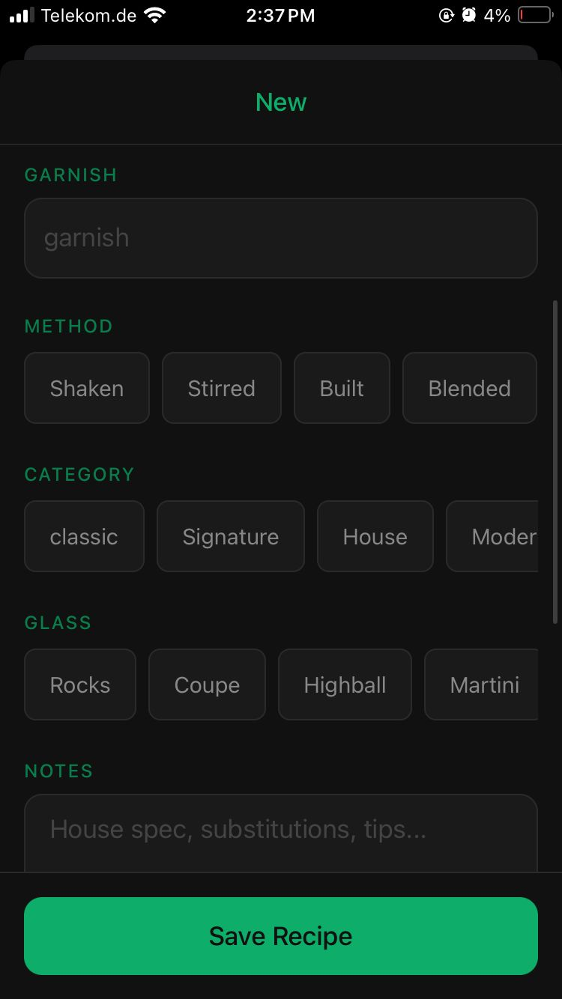
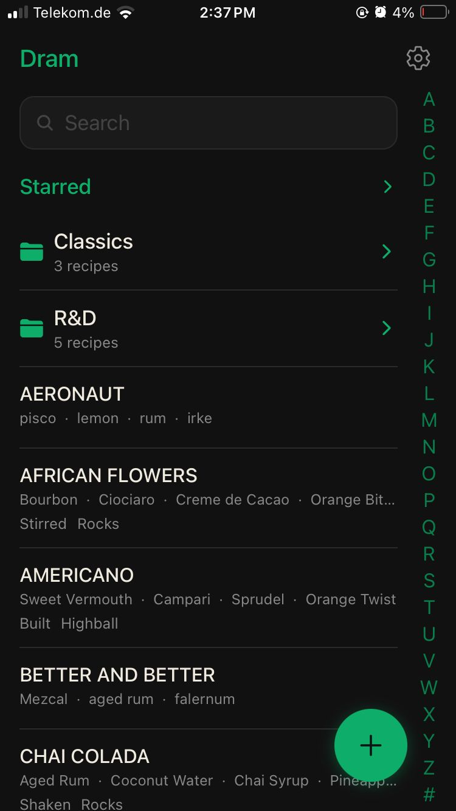
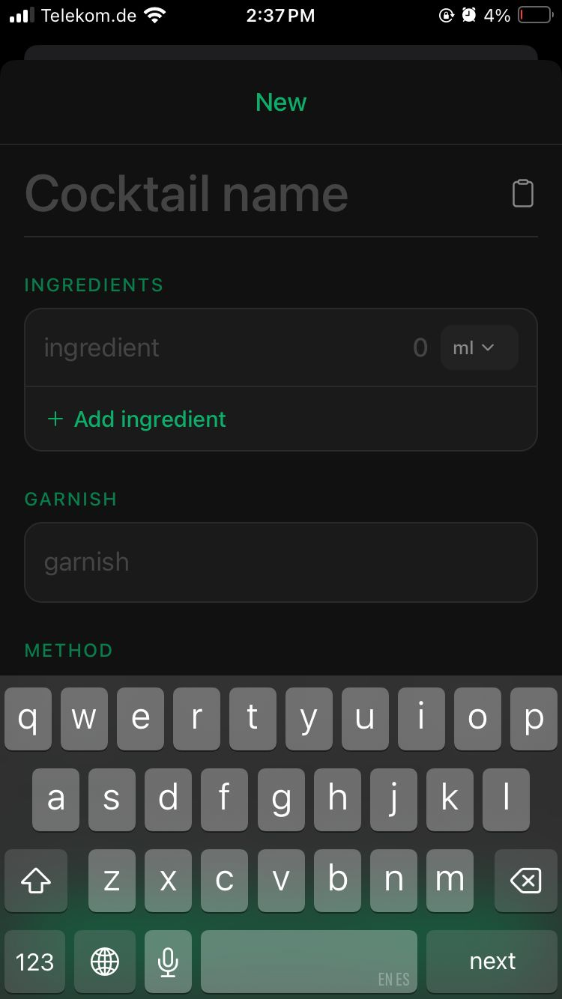
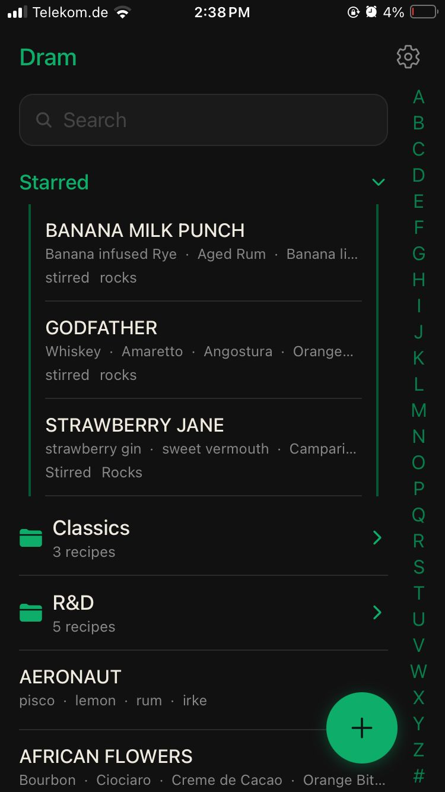
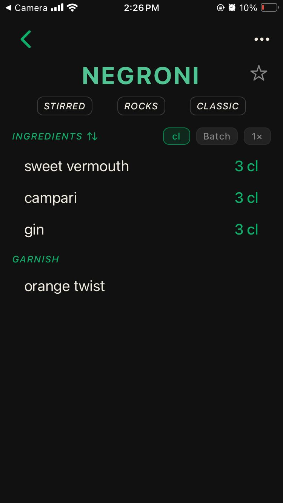
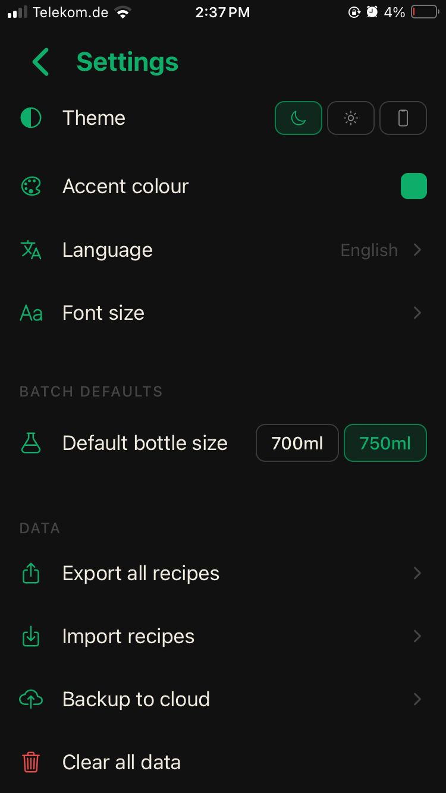
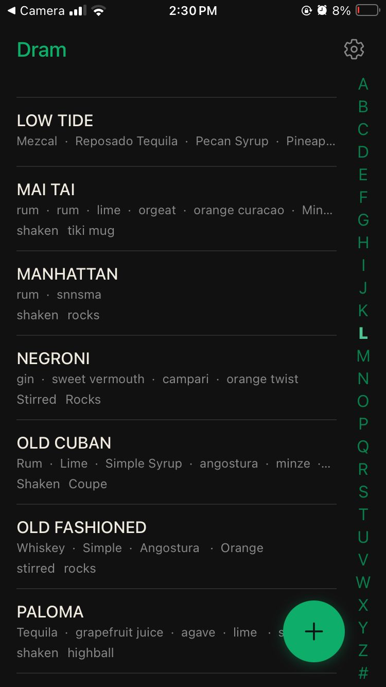
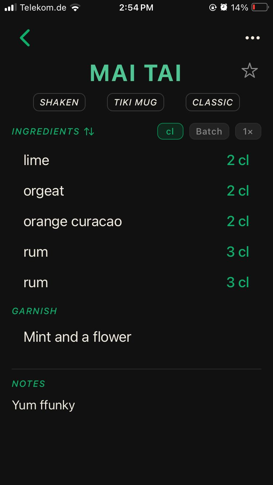

Mobile App · 2025
Dram
Schnelle Rezept-Notizen für Barkeeper: festhalten, bevor die Idee weg ist.
Eine schnelle, fokussierte Notiz-App für Barkeeper, gebaut um das Problem zu lösen, dass Cocktailideen hinter der Bar so schnell verschwinden, wie sie kommen. Dram macht das Festhalten von Rezepten so reibungslos wie möglich.
Rezepte lassen sich in Sekunden speichern: Zutaten, Mengen und Techniken, strukturiert, durchsuchbar und immer griffbereit. Kein Overhead, keine Ablenkung.
- Schnellerfassung mit minimalem UI
- Lokale Persistenz mit IndexedDB
- Custom Hooks für Rezeptverwaltung
- Typsichere Datenmodelle mit TypeScript







